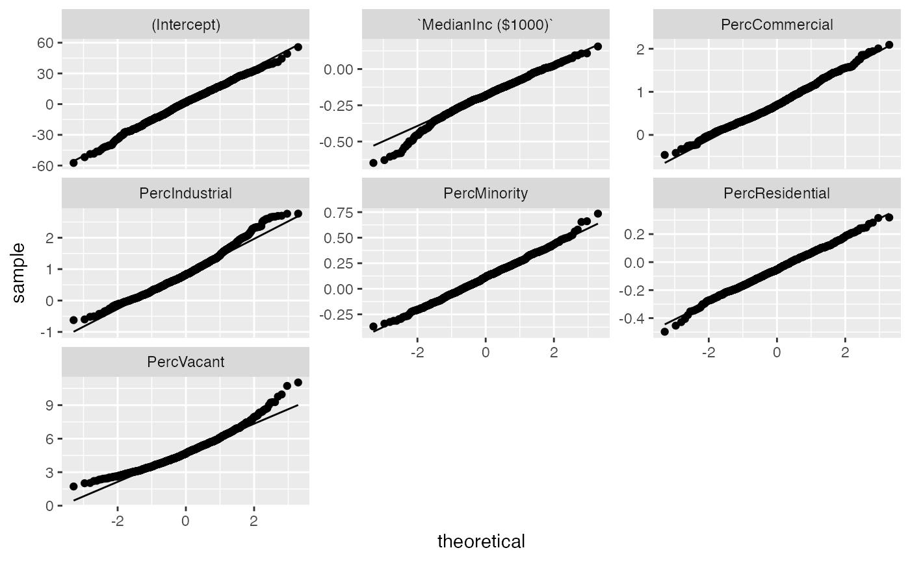
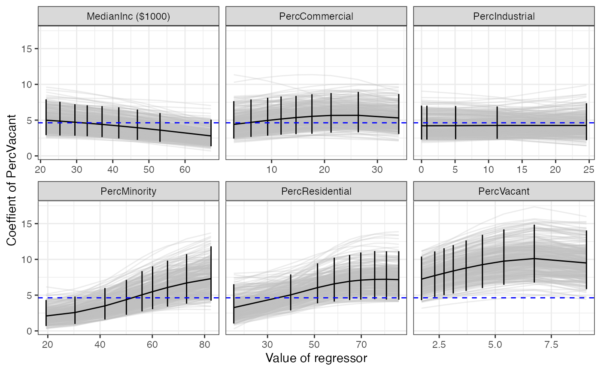

Reproducing LA County Standard Errors from (Buja et al. 2019)
se-la-county-data.RmdSetup and Installation
First, we’ll load the maars package, and other tidyverse analysis packages. If you are a new user, you will need to manually run the following commands in a new in an R session before running the vignette code below:
install.packages(pkgs = c("tidyverse", "vroom", "glue", "magrittr",
"knitr", "kableExtra", "remotes", "magick"))
remotes::install_github('shamindras/maar', force = TRUE)We will explicitly load the tidyverse set of packages to get access to the magrittr pipe (%>%) operator.
For all other functions we will refer to them explicitly using the package::function reference method to avoid ambiguity in the source package of the specific function used (to avoid function name conflicts).
Goal of Analysis
We try to replicate the results of Table 1 in (Buja et al. 2019), as shown below:
![Table 1 from [@buja2019modelsasapproximationspart1]](figures/buja1_table1.png)
Table 1 from (Buja et al. 2019)
Loading the data
Let’s load the LA County Homeless persons data as used in (Buja et al. 2019) and briefly examine it.
# LA County source data url, use glue to split string in easy to read format
url_la_county_dat <- glue::glue("http://www-stat.wharton.upenn.edu/~buja",
"STAT-961/Homeless_LA_by_Census_Tracts.csv",
.sep = "/")
la_county_df <- vroom::vroom(file = url_la_county_dat)
la_county_df %>% dim(x = .)
#> [1] 505 7The loaded dataset contains 505 observations and 7 covariates.
Let’s view the first few rows to understand the structure of the data frame.
la_county_df %>%
head(x = .) %>%
knitr::kable(x = ., format = "html", digits = 3, align = "c") %>%
kableExtra::kable_styling(position = "center")| StreetTotal | MedianInc ($1000) | PercVacant | PercMinority | PercResidential | PercCommercial | PercIndustrial |
|---|---|---|---|---|---|---|
| 2 | 41.577 | 2.576 | 30.467 | 86.683 | 12.231 | 0.000 |
| 0 | 53.481 | 2.841 | 16.921 | 12.087 | 0.256 | 0.000 |
| 6 | 35.236 | 2.029 | 64.388 | 15.830 | 5.657 | 4.314 |
| 4 | 36.683 | 3.132 | 63.709 | 29.811 | 3.693 | 4.683 |
| 5 | 30.870 | 1.576 | 61.496 | 72.805 | 20.370 | 0.000 |
| 18 | 50.714 | 2.541 | 46.605 | 42.663 | 19.327 | 0.000 |
It is already in tidy format (Wickham 2014). So we have imported the data correctly, given that we match the column names in Table 1 of the (Buja et al. 2019) paper.
Fitting the OLS model
We now fit an linear model of the count of homeless people (StreetTotal) as the response variable, against the other covariates using Ordinary Least Squares (OLS).
mod_fit <- stats::lm(formula = StreetTotal ~ ., data = la_county_df)Computing standard errors from OLS (Assuming Well Specification)
Let’s first obtain the standard errors for the fitted coefficients returned from the lm object. We can do this in a tidy manner using the broom::tidy function applied to our fitted lm object, and selecting only the required columns.
se_lm <- broom::tidy(mod_fit) %>%
dplyr::select(term, std.error) %>%
dplyr::rename(.data = ., std.error.lm = std.error)
se_lm %>%
purrr::set_names(x = .,
nm = c('Term', '$SE_{\\text{lin}}$')) %>%
knitr::kable(x = ., format = "html", digits = 3,
align = "c", escape = TRUE) %>%
kableExtra::kable_styling(position = "center")| Term | \(SE_{\text{lin}}\) |
|---|---|
| (Intercept) | 22.767 |
MedianInc ($1000)
|
0.187 |
| PercVacant | 0.901 |
| PercMinority | 0.176 |
| PercResidential | 0.171 |
| PercCommercial | 0.273 |
| PercIndustrial | 0.321 |
Computing standard errors from OLS using Empirical Bootstrap
We now compute the standard errors via \(B = 10^{3}\) bootstrap replications of the dataset of the same size as the original dataset i.e. of the \(B\) replications samples with replacement \(n = 505\) observations from the entire data (which contains \(n = 505\) observations).
Let’s first get the OLS estimates.
coef_emp_boot <- maar::comp_empirical_bootstrap(mod_fit = mod_fit, B = 1000)
dplyr::glimpse(coef_emp_boot)
#> Rows: 1,000
#> Columns: 3
#> $ b <int> 1, 2, 3, 4, 5, 6, 7, 8, 9, 10, 11, 12, 13, 14, 15, 16, 17, 1…
#> $ m <int> 505, 505, 505, 505, 505, 505, 505, 505, 505, 505, 505, 505, …
#> $ boot_out <list> [<tbl_df[7 x 2]>, <tbl_df[7 x 2]>, <tbl_df[7 x 2]>,
<tbl_df…We can visualize the distribution of the variance to check whether it well approximates the normal distribution.
qnorm_boot <- maar::qqnorm_bootstrap(coef_emp_boot)
qnorm_boot
The distribution of the OLS coefficients estimates appears to be approximately normal. Thanks to the fairly large sample size, we can assume to be in the asymptotic regime.
Let’s now compute the standard errors from the outcome of the bootstrap. This can be done through the following function.
se_emp <- coef_emp_boot %>%
tidyr::unnest(boot_out) %>%
dplyr::group_by(term) %>%
dplyr::summarise(std.error.boot = sd(estimate))This now fits, the \(B = 10^{3}\) replications. let’s view the output.
se_emp %>%
head(x = .) %>%
purrr::set_names(x = .,
nm = c('Term', '$SE_{\\text{boot}}$')) %>%
knitr::kable(x = ., format = "html", digits = 3,
align = "c", escape = TRUE) %>%
kableExtra::kable_styling(position = "center")| Term | \(SE_{\text{boot}}\) |
|---|---|
| (Intercept) | 17.137 |
MedianInc ($1000)
|
0.119 |
| PercCommercial | 0.395 |
| PercIndustrial | 0.589 |
| PercMinority | 0.164 |
| PercResidential | 0.110 |
As we can see, the output is in tidy format as a tibble object. This makes it much more readily amenable for additional transformations using the tidyverse set of packages.
Last, let’s compute the confidence intervals for the coefficients estimated on the bootstrapped data sets via the percentile method.
coef_emp_boot %>%
maar::comp_conf_int_bootstrap(probs = c(0.025, 0.975)) %>%
tidyr::pivot_wider(names_from = q, values_from = x)
#> # A tibble: 7 x 3
#> # Groups: term [7]
#> term `0.025` `0.975`
#> <chr> <dbl> <dbl>
#> 1 (Intercept) -33.1 35.9
#> 2 `MedianInc ($1000)` -0.452 0.0182
#> 3 PercCommercial 0.00183 1.57
#> 4 PercIndustrial -0.139 2.06
#> 5 PercMinority -0.193 0.471
#> 6 PercResidential -0.258 0.167
#> 7 PercVacant 2.63 8.11Computing standard errors from OLS using Sandwich Estimator
Then we obtain the standard errors using the White sandwich estimator see White (1980b).
se_sand <- maar::comp_sandwich_qr_var(mod_fit) %>% dplyr::select(term, std.error.sand)
se_sand
#> # A tibble: 7 x 2
#> term std.error.sand
#> <chr> <dbl>
#> 1 (Intercept) 15.9
#> 2 `MedianInc ($1000)` 0.105
#> 3 PercVacant 1.29
#> 4 PercMinority 0.162
#> 5 PercResidential 0.108
#> 6 PercCommercial 0.388
#> 7 PercIndustrial 0.579Comparing standard errors
We combine the standard errors into one tibble.
se_comb <- broom::tidy(mod_fit) %>%
dplyr::select(term, estimate) %>%
dplyr::left_join(x = ., y = se_lm, by = "term") %>%
dplyr::left_join(x = ., y = se_emp, by = "term") %>%
dplyr::left_join(x = ., y = se_sand, by = "term")
se_comb %>%
purrr::set_names(x = .,
nm = c('Term', '$\\widehat{\\beta}_{j}$',
'$SE_{\\text{lin}}$',
'$SE_{\\text{boot}}$', '$SE_{\\text{sand}}$')) %>%
knitr::kable(x = ., format = "html", digits = 3,
align = "c", escape = TRUE) %>%
kableExtra::kable_styling(position = "center")| Term | \(\widehat{\beta}_{j}\) | \(SE_{\text{lin}}\) | \(SE_{\text{boot}}\) | \(SE_{\text{sand}}\) |
|---|---|---|---|---|
| (Intercept) | 0.760 | 22.767 | 17.137 | 15.909 |
MedianInc ($1000)
|
-0.183 | 0.187 | 0.119 | 0.105 |
| PercVacant | 4.629 | 0.901 | 1.375 | 1.287 |
| PercMinority | 0.123 | 0.176 | 0.164 | 0.162 |
| PercResidential | -0.050 | 0.171 | 0.110 | 0.108 |
| PercCommercial | 0.737 | 0.273 | 0.395 | 0.388 |
| PercIndustrial | 0.905 | 0.321 | 0.589 | 0.579 |
Reproduce Table 1 from (Buja et al. 2019)
We can also compute the ratios of the standard errors and the t-statistics as in Table 1 from (Buja et al. 2019).
t_stats <- se_comb %>%
dplyr::mutate(
rat.boot.vs.lm = std.error.boot / std.error.lm,
rat.sand.vs.lm = std.error.sand / std.error.lm,
rat.sand.vs.boot = std.error.sand / std.error.boot,
t.lm = estimate / std.error.lm,
t.boot = estimate / std.error.boot,
t.sand = estimate / std.error.sand
)
t_stats %>%
purrr::set_names(x = .,
nm = c("Term", '$\\widehat{\\beta}_{j}$',
'$SE_{\\text{lin}}$', '$SE_{\\text{boot}}$',
'$SE_{\\text{sand}}$',
"$\\frac{SE_{\\text{boot}}}{SE_{\\text{lin}}}$",
"$\\frac{SE_{\\text{sand}}}{SE_{\\text{lin}}}$",
"$\\frac{SE_{\\text{sand}}}{SE_{\\text{boot}}}$",
"$t_{\\text{lin}}$", "$t_{\\text{boot}}$",
"$t_{\\text{sand}}$")) %>%
knitr::kable(x = ., format = "html", digits = 3,
align = "c", escape = TRUE) %>%
kableExtra::kable_styling(position = "center")| Term | \(\widehat{\beta}_{j}\) | \(SE_{\text{lin}}\) | \(SE_{\text{boot}}\) | \(SE_{\text{sand}}\) | \(\frac{SE_{\text{boot}}}{SE_{\text{lin}}}\) | \(\frac{SE_{\text{sand}}}{SE_{\text{lin}}}\) | \(\frac{SE_{\text{sand}}}{SE_{\text{boot}}}\) | \(t_{\text{lin}}\) | \(t_{\text{boot}}\) | \(t_{\text{sand}}\) |
|---|---|---|---|---|---|---|---|---|---|---|
| (Intercept) | 0.760 | 22.767 | 17.137 | 15.909 | 0.753 | 0.699 | 0.928 | 0.033 | 0.044 | 0.048 |
MedianInc ($1000)
|
-0.183 | 0.187 | 0.119 | 0.105 | 0.638 | 0.560 | 0.877 | -0.977 | -1.531 | -1.745 |
| PercVacant | 4.629 | 0.901 | 1.375 | 1.287 | 1.527 | 1.429 | 0.936 | 5.140 | 3.366 | 3.597 |
| PercMinority | 0.123 | 0.176 | 0.164 | 0.162 | 0.934 | 0.921 | 0.986 | 0.701 | 0.751 | 0.761 |
| PercResidential | -0.050 | 0.171 | 0.110 | 0.108 | 0.644 | 0.633 | 0.983 | -0.292 | -0.454 | -0.462 |
| PercCommercial | 0.737 | 0.273 | 0.395 | 0.388 | 1.446 | 1.421 | 0.982 | 2.700 | 1.867 | 1.901 |
| PercIndustrial | 0.905 | 0.321 | 0.589 | 0.579 | 1.833 | 1.801 | 0.983 | 2.818 | 1.538 | 1.565 |
Model diagnostics from (Buja et al. 2019)
When the model is misspecified, regression coefficients should be seen as statistical functionals rather than fixed quantities. These parameters depend on the distribution of the regressors and it is therefore important to study across the regions of the parameter space.
Let’s then first get OLS estimates under the default reweighting schema implemented in the maars package.
coef_rwgt <- mod_fit %>%
maar::comp_coef_rwgt(mod_fit = .,
terms_to_rwgt = names(la_county_df)[-1],
B = 300)
dplyr::glimpse(coef_rwgt)
#> Rows: 15,000
#> Columns: 5
#> $ term_rwgt <chr> "MedianInc ($1000)", "MedianInc ($1000)", "MedianInc…
#> $ b <int> 1, 2, 3, 4, 5, 6, 7, 8, 9, 10, 11, 12, 13, 14, 15, 1…
#> $ term_rwgt_center <dbl> 21.5386, 21.5386, 21.5386, 21.5386, 21.5386,
21.5386…
#> $ m <int> 505, 505, 505, 505, 505, 505, 505, 505, 505, 505, 50…
#> $ boot_out <list> [<tbl_df[7 x 2]>, <tbl_df[7 x 2]>, <tbl_df[7 x 2]>,…To facilitate the interpretation of the results, we rely on graphical model diagnostics. Here, we show the “focal slope” model diagnostics. The focal_slope plot shows how one coefficient of interests varies under reweighting of each of the regressors. In the plot below we consider teh case of “PercVacant.”
fs <- maar::focal_slope(coef_rwgt, 'PercVacant')
fs